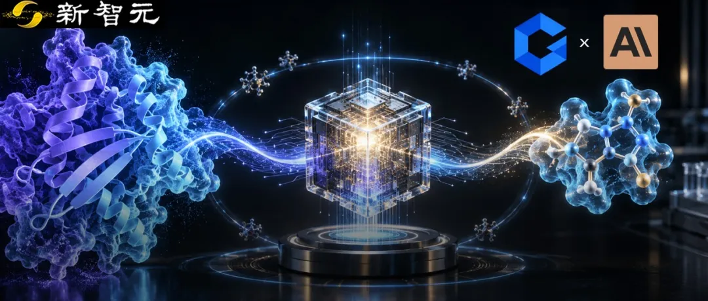
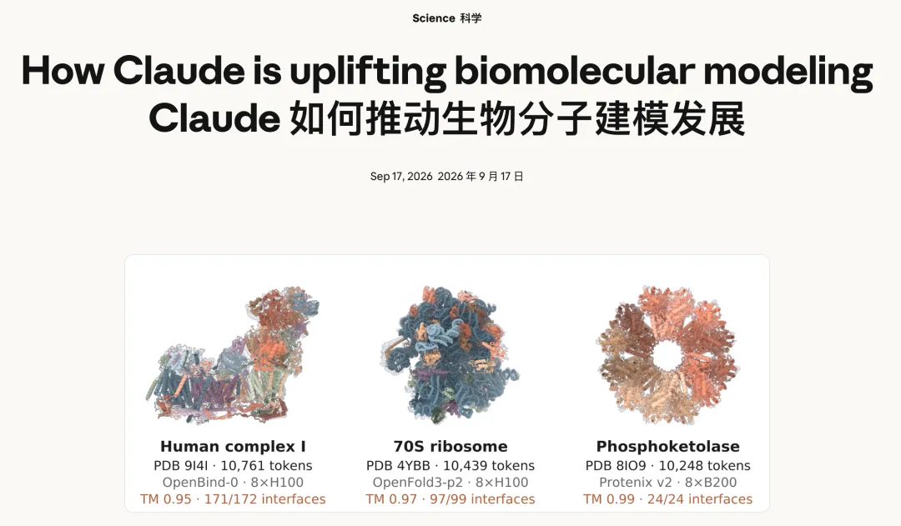
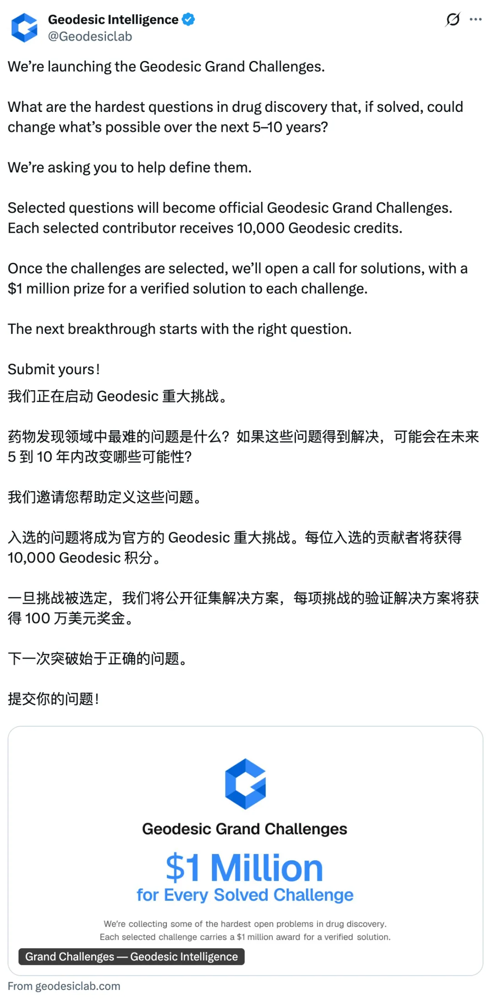
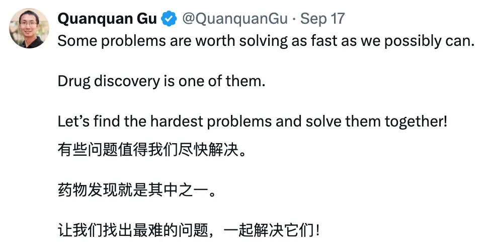
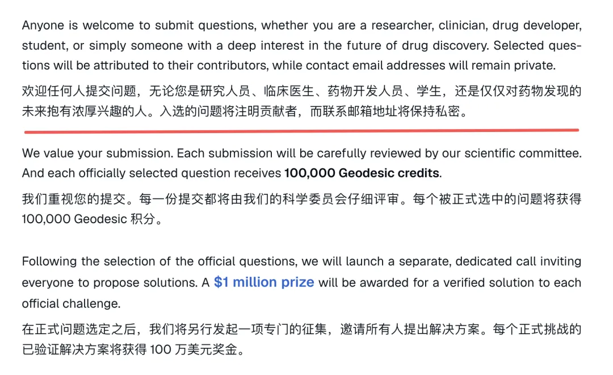
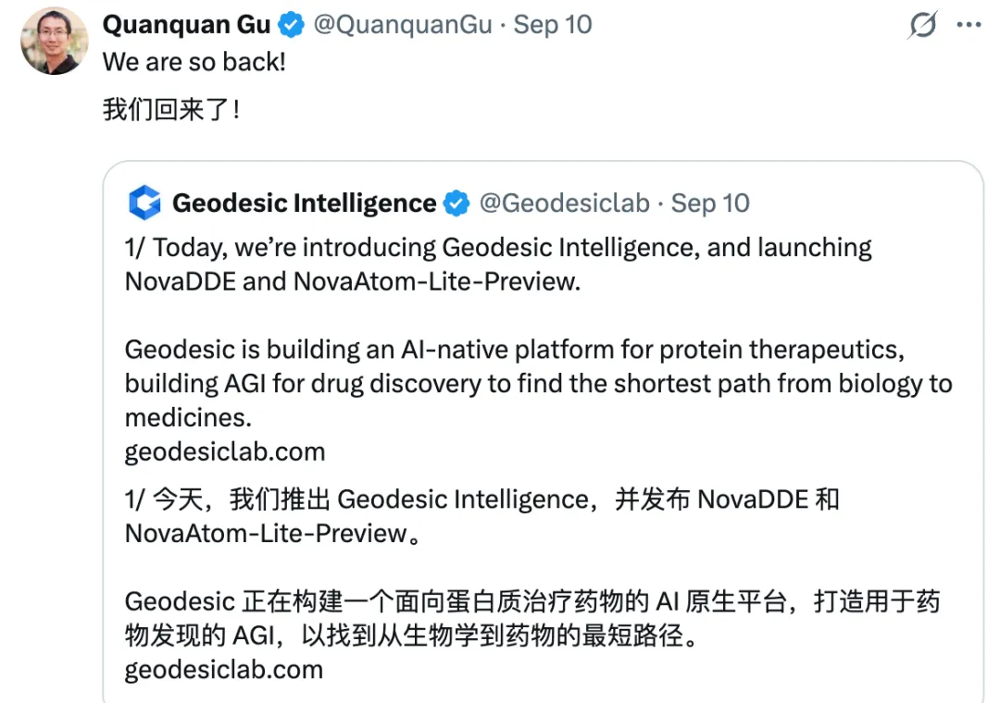
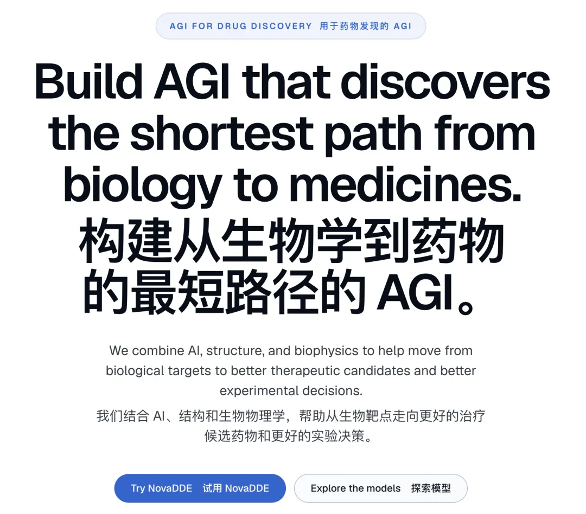
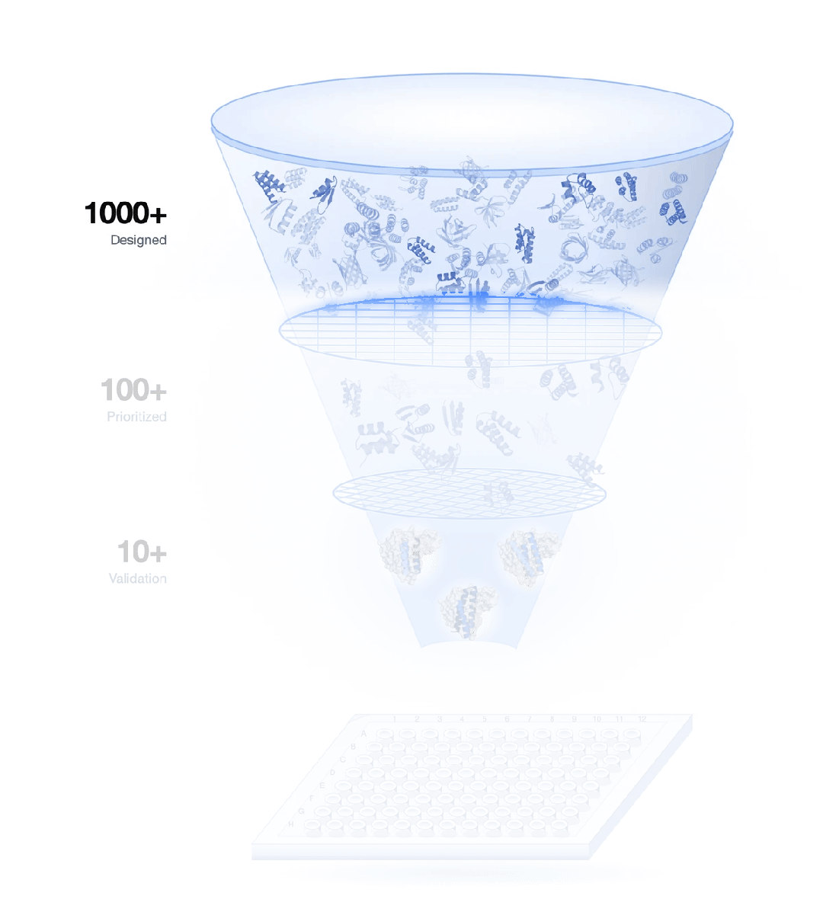
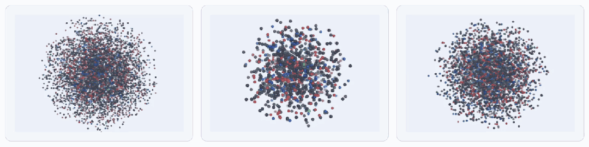

新智元报道
新智元报道

17日，Anthropic 放了一个大招。
Claude 在不到四周内优化了30多个开源生物分子模型，推理平均提速约4倍，还搞出一个低内存模式，能在单个 NVIDIA H100 GPU 节点上处理超过10000个 token 的生物分子系统预测。

光有模型还不够。
Anthropic 同时和 Adaptyv Bio 联合发起了一场蛋白质设计公开赛——精心选了5道前沿设计难题。
计划在 Adaptyv 的自动化实验室里验证5000条以上设计，提供最多100万美元的 Claude 积分。
消息一出，圈内沸腾。
AI + 蛋白 + 一百万，「千禧年难题」的风刚从数学吹过来，Anthropic 就把旗插到了药物发现上。
看起来，这是本月最大胆的一步棋。
但是——
翻一下时间线就会发现，Anthropic 不是第一个这么干的。
就在它发帖的前一天，9月16日，一家官宣才刚满一周的 AI 制药公司，已经把同样量级的悬赏令挂了出去。
而且玩法更野：不是悬赏解法，是悬赏问题本身。

这家公司叫 Geodesic Intelligence（极奥智能）。
它向全球征集药物发现里最难的问题，标准只有一条：一旦解开，能改写这个行业未来5到10年的能力边界。
科学委员会逐一评审，入选问题每道奖励10万 Geodesic credits。
题目定下来之后，再单独开一轮解题征集——每道正式挑战，谁交出经过验证的解，奖100万美元现金。
不是积分，是真金白银。

创始人顾全全转发时只写了三句话：「有些问题值得用最快速度去解，药物发现就是其中之一，一起把最难的题找出来、解掉。」

两件事放在一起，画面就很魔幻了。
Anthropic 花钱做实验。比赛每周一道设计题，比谁设计的 binder（能牢牢抓住靶点的小号蛋白钩子）能在实验室里做出来、测出来。
官方条款写明没有现金大奖，一百万主要是积分和湿实验费用。
Geodesic 花钱买问题。100万美元现金留给经过验证的答案，但第一步是让全世界来告诉它，什么问题最值得解。
一个在送样，一个在立题。时间上，Geodesic 在前，Anthropic 晚了一天。
太魔幻了。。。
一家刚亮相一周的初创公司，居然被 Anthropic 给「蒸馏」了！

事情到这里还没完。
往下扒一层，比谁先谁后更扎眼的问题来了——谁有资格参赛？
Anthropic × Adaptyv 蛋白质设计公开赛，首页大字写着「Open to everyone and free to enter」——对所有人开放，免费参赛。
听起来很美好。
然而翻开官方比赛条款 Section 3.1，一份禁赛名单赫然在列：
参赛者不得为以下地区的合法居民或注册实体——Belarus、China、Cuba、Iran、Myanmar、North Korea、Russia、Sudan、Syria、Crimea……
这意味着，中国的蛋白质设计研究者——不管你是中科院的结构生物学家，还是清华的计算化学博士，不管你有多少篇 Nature、多少个验证过的 binder，你没有资格参加这场「对所有人开放」的比赛。
首页说「Open to everyone」，条款里把14亿人排除在外。
再看 Geodesic 那边。
Grand Challenges 征题页面写得很清楚：
Anyone is welcome to submit questions, whether you are a researcher, clinician, drug developer, student, or simply someone with a deep interest in the future of drug discovery.
研究者、临床医生、药物开发者、学生——不问国籍，不问身份。

100万美元可以奖励一个答案，但提出问题的资格，不应该由护照决定。
Geodesic 没有 Anthropic 那样的规模。但它愿意从一个更简单的原则出发：让全世界的科学家，都有机会把自己认为最重要、最困难的问题带到桌上。
因为真正伟大的科学，从来不属于某一个国家、某一家公司。
它属于所有愿意解决问题的人。
本月10日，顾全全在 X 上官宣 Geodesic Intelligence（极奥智能），同时发布两款产品。

公司官网首页只写了一句目标，简洁到近乎傲慢：Build AGI that discovers the shortest path from biology to medicines（做能找到从生物学到药物最短路径的 AGI）。

怎么做？Geodesic 搭了一套叫 Nova Stack 的技术栈，从软件到模型到实验室，三层全部自己握着。
NovaDDE 是 Geodesic 的智能体工作台。
做药的工序很多，翻文献、查生物学证据、看分子结构、跑计算模型、评估结果，平时得在十几个工具之间来回切换。
NovaDDE 把这些全部收进一个平台，用 AI 智能体替科学家规划任务、调用模型、评估结果，每一步决策都自动留下记录。
你可以用自然语言描述你想做的实验决策，也可以直接进入设计模式——圈定靶点表面，让系统生成约80个氨基酸的 binder。
官网给的数据漏斗很直观：设计1000多个候选分子，排出100多个高质量方案，最终10多个送进实验室验证。

一个关键细节：用户的靶点数据归用户所有，不拿来训练模型，要求删除就删除。
NovaAtom-Lite-Preview 是 Geodesic 自研的全原子结构预测模型，NovaAtom 家族的第一个成员。
简单说就是，输入一组分子的序列，算出其中每个重原子的三维坐标。把分子长什么样、彼此怎么咬合，像拍 CT 一样看清楚。

三个核心特点。
一是「全家桶」式预测。蛋白、DNA、RNA 和小分子放在一起算，不是分开预测再拼接，而是一步到位。这对理解药物和靶点之间的复杂互动至关重要。
二是支持复杂约束条件。环状多肽、需要和靶点形成共价键的药物、指定结合位置——都能作为条件喂给模型。
三是自带「可信度标签」。每个靶点给出5个预测结果并排好序，每一处结构还标着模型对这个位置有多大把握。
目前放出来的是轻量快速版，更大的版本还在训练中。
光在屏幕上画分子不算数。NovaLab 是 Geodesic 自建的湿实验验证系统，负责把设计变成实物。
每个 binder 要过七关：做不做得出来？做得对不对？能不能结合？结合得多牢？换一台仪器反过来再测一遍，信号是不是真的？有没有成药的潜质？到底管不管用？
七关走完，实验数据反哺回 AI，训练下一代模型。这就是 Geodesic 反复强调的闭环：AI → 设计 → 实验 → 学习 → 再来一轮。
做 AI 制药的公司不少，但从 AI 智能体、基础模型到自建湿实验室全链条都自己搭的，在初创公司里极为罕见。
大多数同行要么做模型不做实验，要么做实验不做模型。Geodesic 两头都押，上来就打全栈。
OpenAI 花数百万美元算力攻克数学难题，转身放弃百万奖金；Anthropic 拿出百万级资源赞助蛋白质设计比赛，让更多设计有机会走进实验室。
Geodesic 从另一个方向切入——先让全世界告诉它，哪些题最值得做。
Anthropic 解决的是「验证贵」的问题。Geodesic 解决的是「方向对不对」的问题。
两件事并不冲突，两头都缺钱。
但谁先把题立住，谁就在定义这个行业的下一个十年。
数学的千禧年难题，等了26年才等到 OpenAI 宣称攻下第二道。
药物发现等不了这么久，它值得用最快的速度去解。
编辑：所罗门